輪廻とは果てしなく同じところを回り続けている状態のことを指し、
それを仏教では苦しい状態であると捉えています。
リセットを繰り返し、自暴自棄よりも早く走るしかない世の中では、
立ち尽くすこともあると思います。
そんな時に小休止になったり、
また走り出す勇気を探す手助けができればいいなと思い、
rinneという活動を始めました。
rinneは雑誌、映像、音楽、詩、様々なコンテンツを提供します。
自分の好きな場所で、自分のためにご覧ください。
▶︎diary